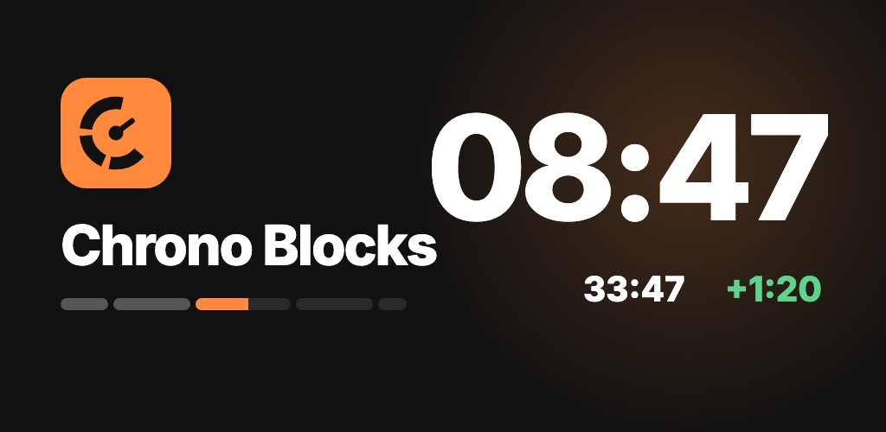

Chrono Blocks
Divide charlas, reuniones y entrenamientos en bloques de tiempo y mantén el ritmo.
- Bloques, no solo minutos: cada uno con su tiempo
- Reserva: los minutos ahorrados pasan al siguiente bloque
- Zona roja, pitido y vibración antes de que acabe un bloque
- Aviso incluso con el teléfono bloqueado
- Resultados: plan y real de cada bloque
- Plantillas listas o las tuyas · Sin cuenta
▶ Google Play — próximamente
Política de privacidad